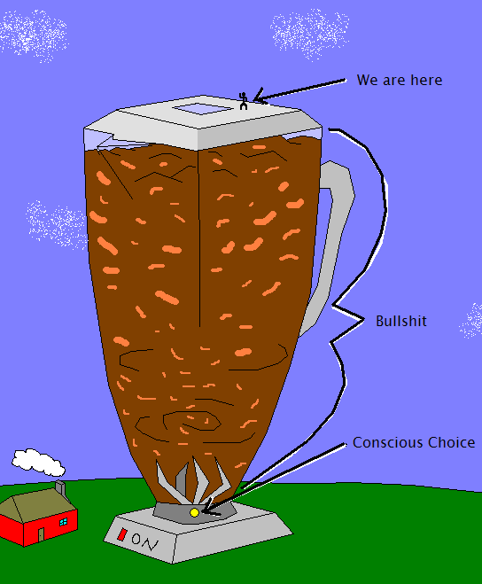

June 19th, 2007 by SeanMy Current Understanding, v3.0
READ: This is a huge post. I’m sorry - I can’t help myself - my thoughts must move! I realize that most people probably won’t read it all - that’s fine, I don’t expect anyone to. This post is more for my own documentation than it is to share my ideas with everyone. In a future post, I will condense this down into a more readable format. Until then, I need to document my thoughts before the next lottery drawing…
So anyways… I lost the lottery on June 15th, and it really pissed me off, and got me thinking. Look - there’s an important lesson here that needs to be learned by the majority of people on this planet. When you’re wrong, you’re wrong. It’s not reality’s fault - it’s mine. When your model of reality is incorrect, you DO NOT force reality to fit into your arbitrary mold. You change your model, and learn from your mistakes. That’s what this post is about.
I was wrong about intention manifestation. I believe intention manifestation is a very nice model of reality, but there are some flaws, and these flaws are holding me back. All models of reality have partial truths in them, so I must take what is true out of the intention manifestation model of reality, and create a new model that can help me win the lottery.
I was breaking the news to a friend of mine, and he responded that first I rejected randomness, and now I’m rejecting intention manifestation… what next? Perhaps I enjoy rejecting models of reality a little too much :-). Either way, I have an updated understanding (which will someday be replaced by yet another, I’m sure). On to version 3.0…
The realization I made originated in my second lottery adventure, which is documented in text and video. What sparked that experience was that I went to the store, and tried to force a win from the scratch off machine. And I failed. Being pissed, I decided to listen instead of forcing things, and documented one of my biggest wins on video as a result.
Where intention manifestation fails is that it gives you the sense that you can accomplish anything, as long as you believe it through and through. This is false. I hate to be a downer, and I hate to sound negative… but I have to conclude it’s false based on the evidence. Belief can help by filtering and aligning your perspective on reality - but belief alone can not create. All it does is change the filter, which can help you in finding opportunities, and things of that nature. With an open belief system, your eyes are more open to success. Belief is important - but belief alone does not do the creation.
Intention manifestation agrees with this mostly. Intention manifestation states that you have to have belief, but you also have to have feelings - you have to visualize and feel as though your goal is true in this moment. Intention manifestation states it’s more than just positive thinking… it’s more than just filtering your perspective. Adding emotions into the mix, and really FEELING it, will produce results. This is false.
Now you might jump out of your seat and yell - “Wait a second, you’ve been using intention manifestation to do all sorts of things, and you’ve gotten results! How can you say that intention manifestation is false?! You’ve used it and seen it with your own eyes!”
True enough. I have used intention manifestation to produce results that can’t be explained by simply altering your beliefs, and changing your filter. On the surface, it seems as though intention manifestation is true, and that’s whats so tricky about it. But we have to dig a little deeper.
The truth is that sometimes intentions come true, and sometimes they don’t. The truth is that sometimes we go through all the steps, and it just doesn’t work. Sometimes it does! And it’s awesome! But sometimes it doesn’t. So obviously we’re missing something in the equation. Some other factor that plays an important role, or some other understanding.
Hopefully I haven’t lost you just yet. Let me review everything, from the beginning, to clear up what I’m about to do.
Ok. So we have these models for reality. Everyone has models for reality in their own minds… we might call them “belief systems”, or “the way things are”, or “how things work”, or “religion” … etc. We all have an internal model of reality that we use in our minds.
Now there are some popular models that a lot of people share. For example, the skeptical/cynical model of reality (version 1.0). If I were to tell a skeptic that I plan on winning the lottery, they might respond that it is POSSIBLE for me to win… but in all likelihood, I won’t. They might use concepts found in statistics and probability to talk about how the world works, and how the lottery is designed to make a profit for the government. They might say that the lottery is the tax for the stupid. Stuff like that. This is all in their model of reality. Now the skeptic usually has trouble telling the difference between actual reality, and the model of reality in their head. They think they see reality perfectly clear, and usually have a hard time admitting that they just might be wrong. They haven’t made the distinction that it’s simply a model in their own mind. But that’s ok, we can forgive them for now.
In the New Age and Personal Development circles, we have the intention manifestation model of reality (version 2.0). If I tell people who subscribe to this model that I plan on winning the lottery, most would probably cheer me on saying that it’s certainly possible if I do what intention manifestation tells me to do. Some people might argue that because I’m getting “something for nothing”, that I will fail, because I don’t have a noble cause. But most would probably admit that it’s possible. They would tell me that I have to really believe that I can win, and that I have to meditate and visualize myself winning, and feel all the emotions associated with that. Really put myself in the moment and feel like a winner. Feel like I just won. See it in my mind so clearly that it becomes superimposed on my subconscious mind, and transmitted out to the universe to attract it using “vibrations” and such. Ok.
Now, those are just two models of reality. Sure, they are each interesting in their own right, and they each have a body of literature and history. They each have truths that can’t be denied. But both of them are still just models of reality made by humans… they inherently have faults in them. The trick is to separate yourself from the model you hold in your mind. Don’t become attached to the model - become attached to reality. Reality is the judge. Not the model in your mind. Reality determines what is possible, and what isn’t possible. Not your human understanding. So we must constantly evolve our own internal models based on what we observe in reality. We might not be able to create a 100% perfect model, but that’s ok. We just need to be flexible enough to modify our model when the situation calls for it. We need to be willing to change.
So… my interest in the lottery was sparked by internalizing the realization that the skeptical/cynical model of reality (version 1.0, dealing with probability and statistics) isn’t entirely true. There is a vital flaw in this model. I outline the flaw in three posts on this website, Part 1, Part 2, and Part 3. If you don’t want to read all those, I will summarize the flaw briefly here.
The flaw with the skeptical/cynical model of reality is that it can’t explain how people win the lottery twice. It simply can’t. Now, if you think that it can explain it, then I encourage you to take classes in probability and statistics to truly understand what our modern views of reality tell us about someone winning the lottery twice. If you grasp probability and statistics correctly, then there is only one conclusion to make: people should never win the lottery twice. Yet, people do. So we must admit that the skeptical/cynical model is incorrect.
Now we reach another crossroad. Reality is not behaving as the intention manifestation model states that it should. Just like reality doesn’t behave like the skeptical/cynical model says it should. What is our response? Modify our model of reality. We are forced to reject intention manifestation, the same way we were forced to reject modern ideas of probability and statistics.
When we rejected probability and statistics, we didn’t reject everything. We can’t. A lot of probability and statistics is completely correct and accurate! I would say probably 99% of it :-). But there is a vital flaw. Probability and statistics rely on the existence of the concept of randomness. However, it is my understanding that randomness does not exist. Therefore, while probability and statistics are great tools, we have to realize what they are doing. They are not modeling random numbers. They are modeling choice. Making that simple correction does not undermine all the work that’s gone into the fields of probability and statistics. It simply tweaks it slightly to more accurately fit reality - and it works.
Now that we’re rejecting intention manifestation, we have to realize that a lot of intention manifestation is completely correct. But we need to tweak again. We need to observe reality, and realize where the holes are in our model. Then we need to patch the holes, and use this modified model of reality to accomplish our goals. If reality throws experiences at us that contradict our modified model (which will certainly happen at some point), then we will be forced to tweak again.
So - where does intention manifestation fail?
It fails when we try to manifest something, following the instructions correctly, and it doesn’t work. Our goal isn’t accomplished. We experienced the feelings, we did the visualization, we focused, felt good, believed… and then nothing. No results. Instead of beating ourselves up, let’s beat up intention manifestation :-).
Let’s try to understand how humans created intention manifestation to begin with. We were pretty smart about it… What we did was go around, and interview and talk to all these successful people. We asked them, “How did you do it? What is your story? What made you succeed where everyone else failed?” This is a great idea! Asking questions is a brilliant idea.
Successful people responded with their stories. And a lot of these stories had things in common. So, being the smart human race that we are, we looked at the patterns. We noticed that a lot of successful people had a burning desire to succeed. And this desire consumed their thoughts. We noticed that a lot of successful people believed they would succeed before they did - even when they logically shouldn’t have believed it. We noticed that this burning desire and belief were the very things that made them succeed. Story after story, we noticed that it was this burning desire and belief that got these people through the tough times, and allowed them to create opportunities for them, that led to success. Amazing!
So, after we noticed this, we proclaimed: Successful people had a burning desire and unwavering belief before they were successful. If you want to be successful, you need a burning desire and unwavering belief. Tada!
This idea is outlined in hundreds of books, the most popular of which is undoubtedly Napoleon Hill’s, Think and Grow Rich, published in 1937. A lot of books influenced the creation of the intention manifestation model of reality, but it is my opinion that this book is one of the major ones.
Over time, the intention manifestation model has evolved into what we see presented today, by programs like “The Secret“, and all the other ripoffs. It has evolved from this idea of burning desire and belief, into visualization and feeling your goal is already achieved.
So where is the mistake? Where is the flaw?
I will tell you. It’s very clear to me now that I have hindsight. The flaw is that we think belief, expectation, and feelings cause our goal to be accomplished. This is incorrect.
This is the mistake that we made. We saw that successful people have strong beliefs, and having this sense of “knowing” that they would succeed, before they actually succeeded. This sense of “knowing” is very important - and anyone who has applied intention manifestation knows specifically what it is. This sense of simply knowing that your goal WILL be accomplished. You just know. The mistake that we made is thinking that this sense of knowing caused the goal to be accomplished.
It’s actually a pretty normal mistake that we make all the time. The cynics have solved this problem already for us (hey, what can I say, I owe you a beer :-P). It’s a logical fallacy, called Post Hoc. We noticed that this sense of knowing came before the success, so we assumed this sense of knowing caused the success. Incorrect. Just because it came before does not mean that it caused it.
Our techniques for intention manifestation are based on the idea that we need to induce this sense of knowing. We need to alter our beliefs. We need to create a burning desire. We need to make ourselves believe. We need to convince ourselves that our goal is accomplished. Once we do that, we will have our sense of knowing. And once we have this sense of knowing, then success will follow.
But now we have to reconcile the fact that people can brainwash a sense of knowing in themselves, and the goal still isn’t accomplished. How do you reconcile that? All you intention manifestation people out there reading this… how do you explain how a person can believe 100%, feel it, visualize it, get into it… and then fail? You can’t. Not with the intention manifestation model. It’s time for a new model.
We run into some tension here, because some people might fear that if intention manifestation is incorrect, then we must downgrade to the skeptical/cynical model of reality. Hey, don’t beat yourself up too bad. We don’t have to move in that direction. We can create a new model that incorporates everything we’ve learned. And since our new model is going to be based on personal experience and open mindedness, we’ll be sure to include everything we possibly can, which will in turn help us to accomplish our goals even faster than before.
So now that we know the history of all this bullshit, what is our new model going to be? I propose version 3.0, the choice model :-). Please be aware that I didn’t come up with this all on my own. My current understanding is a result of reading, experimenting, discussing, and stealing ideas from other smart people (one good location for that is Steve’s forum on intention manifestation).
(This is a long post, I’m sorry. I want to get this down on paper before the next lottery drawing, even if that means no one will read the entire post :-P.)
My current understanding is that choice is the root to achieving a goal. This choice is made before the goal is actually manifested, ranging anywhere from a few microseconds, to decades. When this choice is made, we feel a sense of knowing that the goal will be accomplished. Perhaps this sense of knowing comes from a precognitive facility in our minds that actually sees the goal being accomplished - I’m not sure.
What I want to point out is that this choice has a supernatural quality about it that creates the reality we will someday experience. This isn’t simply a normal decision that we experience all the time… this choice is on a different level. English doesn’t have the vocabulary for it.
Ok, look. This isn’t your normal decision. I’m not sure if I can explain it to someone whose never made a decision like this before. To people who have used intention manifestation, you’ve already done it, and you can probably understand what I’m getting at. There comes a point when you say to yourself, “I AM going to do this. Period.” And that sentence alone isn’t what’s so powerful about it. It’s all the emotion… it’s every cell in your body saying “YES” to this. It is a true decision, a real choice. Not the wishy-washy crap that we do daily. It’s the type of choice that makes you slam your fist down on the table, stand up tall, and stare reality in it’s eye. It’s not anger, it’s not fear, it’s not happiness, it’s not joyfulness. It’s the raw emotion of “am”. “To be”. I AM going to do this.
That’s where the power is. It’s not about good or bad, or noble, or evil. It’s raw “YES”. It’s raw “GO”. This is the emotion that is the root to the burning desire. This is the emotion that is the root to belief. To the sense of knowing. This emotion - this choice - is the origin. Maybe you’ve never made a decision like this before, but you’ve probably seen someone make this decision. To look in their eye, and see their resolve. It’s almost like their decision convinces you. You don’t know how they’re going to accomplish their goal, but just by looking at them you know they are going to.
It’s not stubbornness, though it might look a little similar. It’s different. Stubbornness is forceful in nature… this type of decision that I’m describing really isn’t forceful. It’s self-evident. It’s true because it’s true. Stubbornness shuts down your mind… this type of decision opens your mind up. That’s one way to tell the difference.
When you make a decision like this, the world moves. Shit that’s in your way gets out of your way. Shit you need to experience starts to bee-line in your direction.
Now - there are different degrees, which is important to realize. It’s not all about emotion, even though that’s the picture I painted above. Emotion does help though. We can throw all the emotion out the window, and still be left with this choice. However, if you want to make the choice consciously, it would probably be in your best interest to use emotion to help you.
It’s about existence. It’s about being. It’s not inducing a sense of knowing… it’s behind that. Once you hit it, you feel a sense of knowing. Don’t identify it as the sense of knowing - that’s where intention manifestation made it’s mistake. It’s behind the sense of knowing. It’s the root.
Intention manifestation points us in the right direction, which is why it’s successful. But it fails because it’s not precise. It gets us in the right area, but it misses the exact location. We may stumble upon the exact location while using intention manifestation, but only because it’s in such close proximity. These are the times when we succeed. Other times, we are still in the same ballpark, but we fail because we didn’t precisely hit where we need to be.
I’m not sure if I’m explaining it correctly. Sometimes my mind gets carried away… let me try again :-P.
Ultimately, it is a choice. Wash away the extra bullshit, and you’re left with a choice. Now, in reality, we have a real hard time washing away the extra bullshit :-P. So we have to deal with the bullshit instead. That’s where things start getting hard to understand. Everyone has different stuff piled on their consciousness, so we all have different things to deal with when it comes to making this choice. It’s tough to get through and make the choice, because there’s so much crap. That’s why we have techniques, methods, exercises, models, ideas, discussions, growth, etc.
Look, if you believe that you can’t win the lottery, then that is extra bullshit piled on your consciousness that needs to be dealt with before you can win the lottery. But it’s not even that simple. If that’s all you had to deal with, then that would be easy! In reality, we have miles of shit to wade through. A simple belief that you can’t win is just an ounce.
Here, let me draw a picture:

Alrighty! 
All hope is not lost… yet :-P.
My point is that we have a lot of stuff that goes on inside of our head that stops us from making these powerful choices all the time. The intention manifestation model does a pretty good job of cutting through a lot of that shit, but it’s not good enough. We can accomplish a lot of wonderful things with intention manifestation, but it falls short when it comes to winning the lottery. We might be able to use intention manifestation to win the lottery, but there is a better way.
I failed to win the lottery this past time because I focused on inducing a sense of knowing, assuming that it was the sense of knowing that created the success. This is false, hence I failed.
Now that I see that this supernatural choice is my goal, I know where to aim. And I’ll know when I get it, because I’ll feel a sense of knowing.
Blah blah blah blah blah.
What does it all mean?!
It means I’m changing my strategy for picking lottery numbers. In the past, I just picked random numbers while filling out the lottery sheet. This method may produce a win, but I want to be smarter about it. My new method is to write down lottery numbers on paper, and examine my “sense of knowing” about them. Then tweak the numbers over and over again, until I find my maximum “sense of knowing”. Then play those numbers.
This “sense of knowing” is something that needs to be polled. It needs to be examined and used. NOT FORCED. Not induced. It’s already in us, so let’s use it! I’m much more confident with this strategy than my strategy in the past, and it feels much more correct.
We shall see where it leads.
If you’ve made it this far, amazing. I really didn’t expect anyone to read this entire post. You must be bored :-). Like I said at the start, I intend on making a much more smaller version of this post in the future. I simply didn’t have the time, and I wanted to get my ideas out before the next lottery drawing. If you’ve skipped to the end, then you’re a lousy cheater!  JERK! :-P. Anyways… this post took three days to write. And my thoughts are still bouncing around. They will eventually settle down. Thanks! See ya.
JERK! :-P. Anyways… this post took three days to write. And my thoughts are still bouncing around. They will eventually settle down. Thanks! See ya.